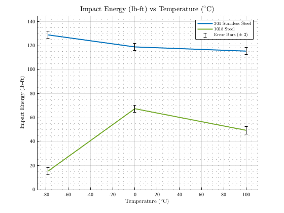

Contents
close all; clear
Data
temperature = ([-108.4 32 212] - 32 ) * 5/9;
impactEnergy304 = [129 119 115.5];
impactEnergy1018 = [15.5 67.5 49.5];
Plots
figure(1)
hold on
grid on
grid minor
plot(temperature, impactEnergy304, 'Color', '#0072BD', 'LineWidth', 2);
plot(temperature, impactEnergy1018, 'Color','#77AC30', 'LineWidth', 2);
xlim([-88 110]);
ylim([0 145]);
deltaImpactEnergy = 3;
error = deltaImpactEnergy * ones(size(impactEnergy304));
errorBar304 = errorbar(temperature, impactEnergy304, error);
errorBar1018 = errorbar(temperature, impactEnergy1018, error);
errorBar304.Color = 'k';
errorBar304.CapSize = 5;
errorBar304.LineStyle = 'None';
errorBar1018.Color = 'k';
errorBar1018.CapSize = 5;
errorBar1018.LineStyle = 'None';
ylabel(' {Impact Energy (lb-ft)}', 'fontsize', 11, 'FontName', 'Times', ...
'Interpreter', 'latex');
xlabel(' {Temperature ($${^\circ}$$C)}', 'fontsize', 11, 'FontName', 'Times', ...
'Interpreter', 'latex');
title('{Impact Energy (lb-ft) vs Temperature ($${^\circ}$$C)}', 'fontsize', 14, ...
'FontName', 'Times', 'Interpreter', 'latex');
legend('304 Stainless Steel', '1018 Steel', 'Error Bars ($${\pm}$$ 3)', 'location', ...
'northeast', 'FontName', 'Times', 'Interpreter', 'latex');
ax = gca;
ax.FontName = 'Times';

Calculations
impactEnergy304J = impactEnergy304 * 1.35582;
impactEnergy1018J = impactEnergy1018 * 1.35582;
deltaImpactEnergyJ = abs(1.35582) * deltaImpactEnergy;